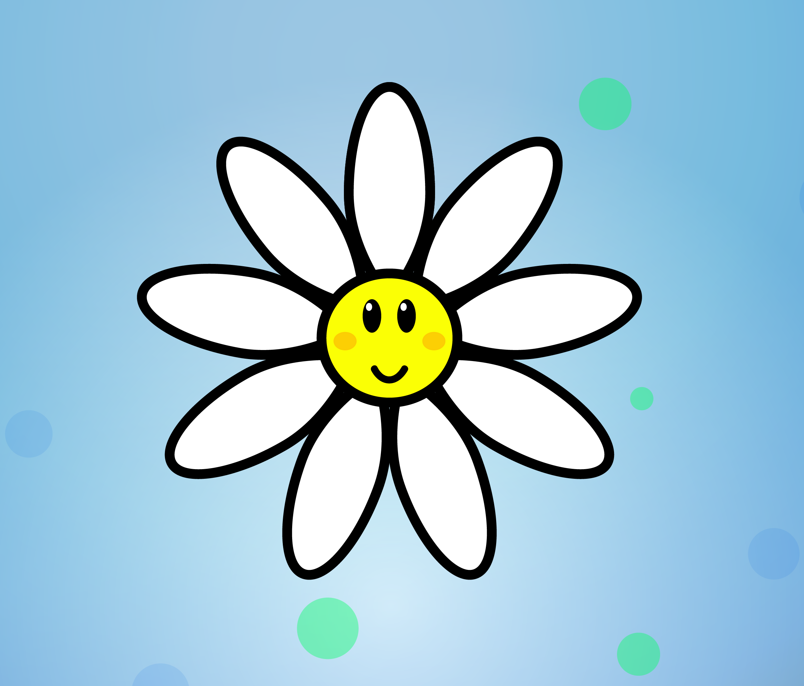

Práctica N° 8: Manejo de la herramienta pluma, manejadores. Reflejo. Contornear trazado. Herramienta anchura. Estilo kawaii.
Práctica N° 7: Uso de figuras simples. Herramienta Reflejo (O). Estilo kawaii.
Práctica N° 6: Agrupar y desagrupar objetos. Estilo kawaii.
Práctica N° 5: Organización de capas y manejadores. Flat design.
Práctica N° 4: Herramienta Rotar (R) y Opacidad.
Práctica N° 3: Figuras básicas y sombras. Flat design.

Práctica N° 2: Figuras básicas y uso de capas. Flat design.

Práctica N° 1: Figuras básicas. Flat design.